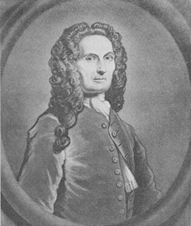
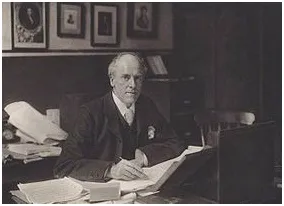
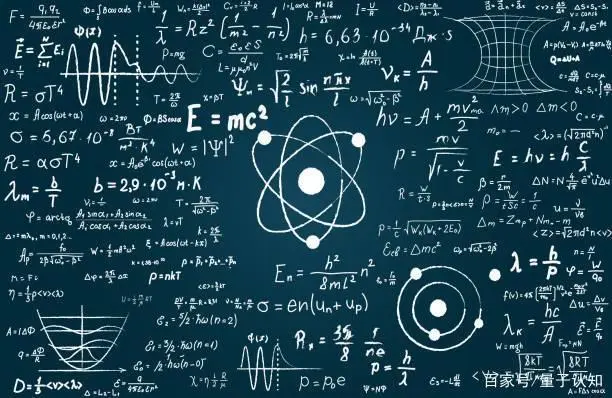
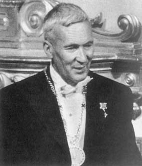
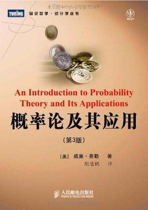

概率论年表
大道五十,天衍四九,遁去其一
伊始
近似于骰子的玩具在公元前 5000 年的遗址中出土；人口调查在公元前 2700 年已进行；

1494
1494年 意大利数学家帕乔利出版《算术、几何、比与比例集成》,内有“点数问题”

1654
卡尔达诺(1539)塔塔利亚(1556)伽利略(1642)均讨论过"点数问题",最后于1654年,帕斯卡与费马通信，两人用不同方法都正确解答了“点数问题”,这标志概率论诞生
1662
1662年 英国格朗特发表《根据死亡公告作的自然和政治的观察》,开创统计学新时代.
1669
1669年 惠更斯根据格朗特著作构造了一根死亡率曲线,开创应用概率论于人口统计.

1733
1733年 棣莫弗导出正态曲线,提出最初的“中心极限定理”.
1805
1805年 勒让德发表论文“确定彗星轨道的新方法”,提出最小二乘法.

1851
1851年 第一届国际统计会议在布鲁塞尔召开.

1869
1869年 高尔顿出版《遗传基因》,开创生物统计研究,引进相关和回归,创用中位数,百分位数.

1893
1893年 皮尔逊第一次使用术语“矩”,引进“标准差”术语和记号σ，又在一次演讲中命名高斯曲线为“正态分布”，

1923-1927
量子力学建立：
1925年 海森伯提出矩阵力学.
1926年 薛定谔提出波动方程.
1926年 玻恩提出概率诠释.
1927年 海森伯提出测不准关系式.

1933
1933年 科尔莫戈罗夫出版《概率论基础》.

1950
1950年 费勒《概率论及其应用》第一卷出版.